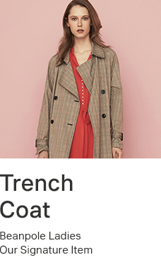

01css_selector_property p. 149
속성 선택자는 html tag element에 있는 속성(href, src, alt, type, title...)을 선택하여 서식을 적용하고자 할 때 사용하는 선택자로서 기본속성, 문자열 속성 선택자가 있다.
1. 기본 속성 선택자
[ 작성법 ]
선택자[속성] : 사용자가 선택한 요소안에 '속성이 일치하는 요소를 선택한다.
선택자[속성=값] : 선택한 요소안에 '속성=값'이 일치하는 요소를 선택한다.
ex )
2. 문자열 속성 선택자
속성 값 안에 있는 문자열 값에서 사용자가 찾고자 하는 문자를 선택하여 서식을 적용한다.
- 선택자[속성 | (파이프라인)=값] : 특정 값이 포함된 단어를 선택한다.
- 선택자[속성 ^ (써컴플렉스)=값] : 시작하는 단어가 포함된 속성을 선택한다.
- 선택자[속성 $ (달러사인)=값] : 끝나는 단어가 포함된 속성을 선택한다.
- 선택자[속성 * (아스테리스크)=값] : 문자열 안에서 해당 단어가 포함된 속성을 선택한다.
- 선택자[속성 ~ (틸트)=값] : 여러 값 중 특정 '값'이 포함되어 있을 때 선택한다.
실습 - Image 확장자 별(jpg,gif,bmp,pmg) 테두리 속성을 구별되게 적용하고, 마우스 오버시 확장자 모두 테두리 안에 색상이 나오게 서식을 적용한다.
